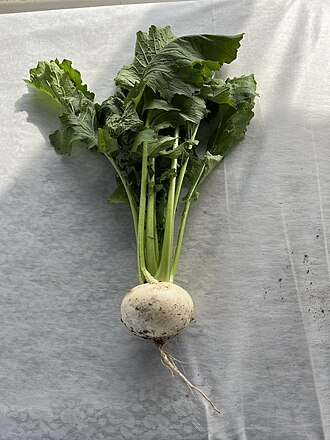

かぶ（蕪）の生産量 都道府県ランキング
全20県の順位と、とれた量
かぶが日本でいちばん多くとれるのは千葉県です。2万5,400 tで、全国（9万4,300 t）の27%を占めます。

| 順位 | 都道府県 | 収穫量 | 全国に占める割合 |
|---|---|---|---|
| 1位 | 千葉県 | 2万5,400 t | 27% |
| 2位 | 埼玉県 | 1万4,600 t | 15% |
| 3位 | 青森県 | 5,650 t | 6.0% |
| 4位 | 滋賀県 | 4,270 t | 4.5% |
| 5位 | 福岡県 | 3,700 t | 3.9% |
| 6位 | 北海道 | 3,010 t | 3.2% |
| 7位 | 京都府 | 2,940 t | 3.1% |
| 8位 | 岐阜県 | 2,630 t | 2.8% |
| 9位 | 愛知県 | 2,280 t | 2.4% |
| 10位 | 新潟県 | 2,120 t | 2.2% |
| 11位 | 山形県 | 1,930 t | 2.0% |
| 12位 | 徳島県 | 1,900 t | 2.0% |
| 13位 | 神奈川県 | 1,850 t | 2.0% |
| 14位 | 東京都 | 1,790 t | 1.9% |
| 15位 | 茨城県 | 1,770 t | 1.9% |
| 16位 | 福島県 | 1,630 t | 1.7% |
| 17位 | 栃木県 | 1,160 t | 1.2% |
| 18位 | 三重県 | 1,070 t | 1.1% |
| 19位 | 広島県 | 1,020 t | 1.1% |
| 20位 | 富山県 | 1,000 t | 1.1% |
この数字について
- 分類：アブラナ科
- 全国の収穫量：9万4,300 t
- この数字が表すもの：収穫量（畑や田でとれた重さ）
- 調査：作物統計調査 作況調査（野菜） 令和6年産
- 20県分を調査（調査していない県は順位に入りません）
かぶの生産量について、よくある質問
- かぶの生産量が日本一の都道府県はどこですか？
- 千葉県です。作物統計調査 作況調査（野菜）（令和6年産）で2万5,400 tでした。
- かぶの生産量ランキング2位・3位はどこですか？
- 2位は埼玉県（1万4,600 t）、3位は青森県（5,650 t）です。
- かぶの生産量ランキング4位・5位はどこですか？
- 4位は滋賀県（4,270 t）、5位は福岡県（3,700 t）です。かぶの全20県の順位は上の表のとおりです。
- かぶの全国の生産量はどれくらいですか？
- 9万4,300 t（令和6年産）です。